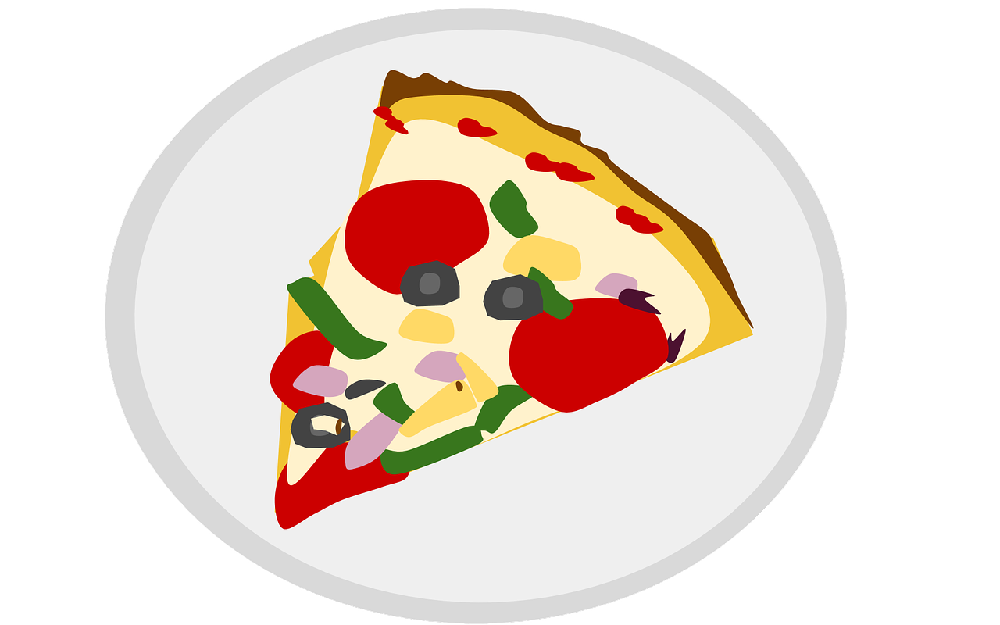

Problem
Last year, April had a pizza party for all 36 students in her class. She expected everyone to eat 4 slices of pizza each. When the party was done, she had a lot of pizza left over. April observed three groups at the party.
Group A made up one-third of the class. Each person in this group ate half the number of slices April predicted everyone would eat.
Group B made up half of the class. They each ate 2 slices. After that, each person shared one more slice with a friend in this group.
Group C made up the remainder of the class. Each person in this group ate 4 slices each, as she expected.
How many people were in Group A?
How many pizza slices in total did the people in Group B eat?
How many people were in Group C?
If a large pizza has 12 slices, how many pizzas should April have ordered for the party to avoid having so much pizza left over? Note that she might still have ended up with a few extra slices.
Solution
Since \(\frac{1}{3}\) of the students were in Group A, and there were 36 people, that means that there were \(36 \div 3 = 12\) students in this group.
Group B had \(\frac{1}{2}\) of the students in the class, which is equal to \(36 \div 2 = 18\) people. Each of these people ate 2 slices, for a total of \(18 \times 2 = 36\) slices. Each of these 18 people also split 1 slice. This means that \(18 \div 2 = 9\) pairs of students shared a single slice of pizza. In total the people in Group B ate: \(36 + 9 = 45\) slices of pizza.
Between Group A and Group B we have accounted for a total of \(12 + 18 = 30\) people. The remaining \(36 - 30 = 6\) people are in Group C, and they ate 4 slices of pizza each.
Since each student in Group A ate half the number of slices April predicted, this means each one ate \(4 \div 2 = 2\) slices. Therefore, everyone in Group A ate a total of \(12 \times 2 = 24\) slices of pizza.
Students in Group C ate a total of \(6 \times 4 = 24\) slices of pizza.
We calculated that students in Group B ate a total of 45 slices of pizza.
So the people at the party ate a total of \(24 + 24 + 45 = 93\) slices.
Since a large pizza has 12 slices, we can skip count to see how many pizzas April would have needed to have at least 93 slices: 12, 24, 36, 48, 60, 72, 84, 96. This means April should have ordered 8 pizzas to feed the people at the party.